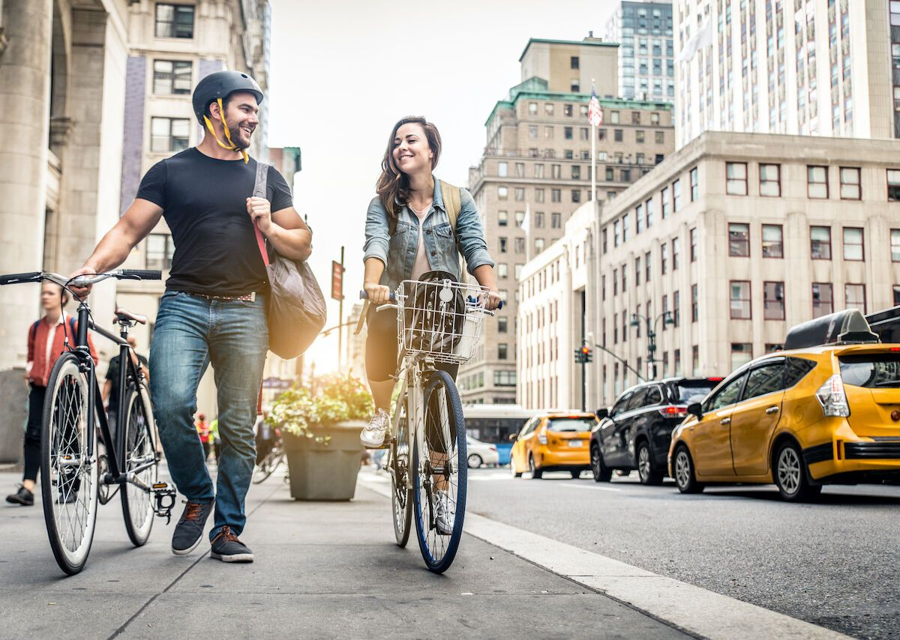
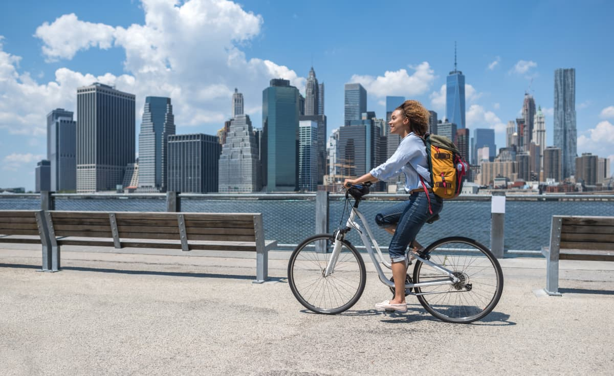

Cycling
Gallery
.jpeg)


Types of Cycling
- Road Cycling
- Racing
- Touring
- Criteriums
- Mountain Biking
- Cross-country (XC)
- Downhill (DH)
- Enduro
- Track Cycling
- Cyclocross
- BMX
- Indoor Cycling
- Spin Classes
- Virtual Racing
Benefits of Cycling
- Physical Health: Improves cardiovascular fitness, muscle strength, and flexibility.
- Weight Management: Burns calories and helps maintain a healthy weight.
- Mental Well-being: Reduces stress, anxiety, and depressive symptoms.
- Environmentally Friendly: Reduces carbon footprint compared to motor vehicles.
- Accessibility: Suitable for all ages and skill levels.
Essential Cycling Gear
- Helmet: Crucial for protecting against head injuries.
- Cycling Jerseys and Shorts: Enhance comfort with padding and sweat-wicking fabrics.
- Gloves: Improve grip and protect hands during long rides or falls.
- Lights and Reflectors: Increase visibility for early morning or nighttime riding.
- Repair Kit: Includes spare tubes, tire levers, and a multi-tool.
Cycling Safety Tips
- Wear Proper Gear: Always wear a helmet and appropriate clothing.
- Follow Traffic Laws: Obey all traffic signs and signals.
- Stay Visible: Use lights and wear reflective clothing, especially in low light conditions.
- Plan Your Route: Choose routes with less traffic and good lighting.
- Stay Alert: Keep an eye out for hazards like potholes, broken glass, and gravel.
- Signal Intentions: Always use hand signals when turning or stopping.
Cycling Lanes in New York City